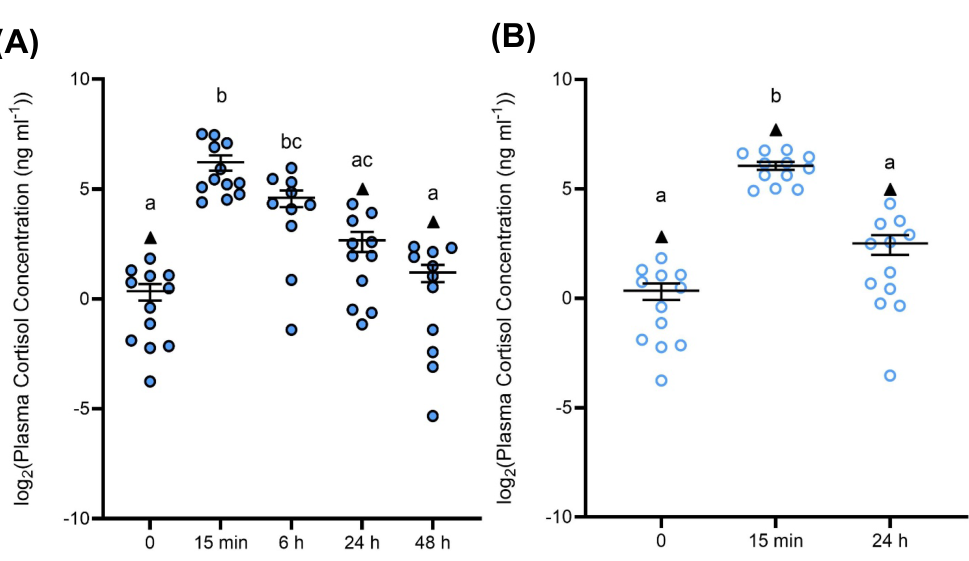

hsd11b2 encodes zebrafish 11-beta-hydroxysteroid dehydrogenase type 2, a membrane short-chain dehydrogenase/reductase that oxidizes cortisol and related active 11-beta-hydroxy steroids to inactive 11-keto forms. Its core role is NAD(+)-dependent glucocorticoid/cortisol catabolism, with stress-axis effects downstream of this steroid-inactivating activity.
| GO Term | Evidence | Action | Reason |
|---|---|---|---|
|
GO:0070523
11-beta-hydroxysteroid dehydrogenase (NAD+) activity
|
IBA
GO_REF:0000033 |
ACCEPT |
Summary: 11-beta-hydroxysteroid dehydrogenase (NAD+) activity (GO:0070523) is supported for zebrafish hsd11b2 and is coherent with the synthesized gene function.
Reason: The supported biochemical activity is NAD(+)-dependent 11-beta-hydroxysteroid dehydrogenase/cortisol oxidation.
Supporting Evidence:
file:DANRE/hsd11b2/hsd11b2-uniprot.txt
Reaction=cortisol + NAD(+) = cortisone + NADH + H(+);
PMID:33387577
11β-hydroxysteroid dehydrogenase 2 (11β-HSD2) converts active
file:DANRE/hsd11b2/hsd11b2-deep-research-falcon.md
Direct biochemical evidence from zebrafish tissue homogenates supports **NAD+-dependent oxidative conversion**
file:DANRE/hsd11b2/hsd11b2-deep-research-falcon.md
incubating zebrafish homogenates with **cortisol (100 nM) plus NAD+ (2 mM)** yields measurable cortisone
|
|
GO:0008211
glucocorticoid metabolic process
|
IBA
GO_REF:0000033 |
ACCEPT |
Summary: glucocorticoid metabolic process (GO:0008211) is supported for zebrafish hsd11b2 and is coherent with the synthesized gene function.
Reason: Glucocorticoid metabolism is the correct biological process for hsd11b2-mediated cortisol inactivation.
Supporting Evidence:
file:DANRE/hsd11b2/hsd11b2-uniprot.txt
Catalyzes the conversion of biologically active 11beta-
PMID:23042946
Stressor exposure increased the conversion of (3)H-cortisol to (3)H-cortisone
file:DANRE/hsd11b2/hsd11b2-deep-research-falcon.md
an enzyme that catalyzes the conversion (oxidative inactivation) of biologically active cortisol to biologically inactive cortisone
file:DANRE/hsd11b2/hsd11b2-deep-research-falcon.md
thereby limiting cortisol bioavailability to corticosteroid receptors
|
|
GO:0016020
membrane
|
IEA
GO_REF:0000044 |
ACCEPT |
Summary: membrane (GO:0016020) is supported for zebrafish hsd11b2 and is coherent with the synthesized gene function.
Reason: The protein is annotated as a multi-pass membrane protein and this location is consistent with the record. This rests on the UniProt subcellular-location mapping; falcon deep research explicitly notes that subcellular/cell-type localization of zebrafish Hsd11b2 is not directly established by functional evidence (only region-level adult-brain expression), so the membrane term remains an IEA-supported assignment.
Supporting Evidence:
file:DANRE/hsd11b2/hsd11b2-uniprot.txt
SUBCELLULAR LOCATION: Membrane
|
|
GO:0047022
7-beta-hydroxysteroid dehydrogenase (NADP+) activity
|
ISS
GO_REF:0000024 |
REMOVE |
Summary: 7-beta-hydroxysteroid dehydrogenase (NADP+) activity (GO:0047022) is not supported for zebrafish hsd11b2 by the curated evidence.
Reason: The 7-beta-hydroxysteroid dehydrogenase (NADP+) annotation does not match the supported zebrafish Hsd11b2 substrate and cofactor specificity. Falcon deep research reinforces that the zebrafish enzyme performs NAD(+)-dependent oxidation of cortisol to cortisone, with no evidence for 7-beta-hydroxysteroid or NADP(+)-dependent activity.
Supporting Evidence:
file:DANRE/hsd11b2/hsd11b2-uniprot.txt
Reaction=cortisol + NAD(+) = cortisone + NADH + H(+);
PMID:15358559
zebrafish genome contains
file:DANRE/hsd11b2/hsd11b2-deep-research-falcon.md
the reaction direction relevant to functional annotation: **cortisol → cortisone** (cortisol inactivation)
file:DANRE/hsd11b2/hsd11b2-deep-research-falcon.md
Direct biochemical evidence from zebrafish tissue homogenates supports **NAD+-dependent oxidative conversion**
|
|
GO:0034650
cortisol metabolic process
|
IMP
PMID:34830405 Knockout of the hsd11b2 Gene Extends the Cortisol Stress Res... |
ACCEPT |
Summary: cortisol metabolic process (GO:0034650) is supported for zebrafish hsd11b2 and is coherent with the synthesized gene function.
Reason: Cortisol metabolic process directly reflects the cortisol-to-cortisone activity and stress-axis literature.
Supporting Evidence:
PMID:34830405
The Hsd11b2 enzyme converts cortisol into its inactive form, cortisone
PMID:23042946
Stressor exposure increased the conversion of (3)H-cortisol to (3)H-cortisone
file:DANRE/hsd11b2/hsd11b2-deep-research-falcon.md
loss of Hsd11b2 **extends the cortisol stress response** (delayed recovery), establishing Hsd11b2 as a major cortisol-catabolic component during stress recovery
|
|
GO:0070523
11-beta-hydroxysteroid dehydrogenase (NAD+) activity
|
IDA
PMID:33387577 Species-specific differences in the inhibition of 11β-hydrox... |
ACCEPT |
Summary: 11-beta-hydroxysteroid dehydrogenase (NAD+) activity (GO:0070523) is supported for zebrafish hsd11b2 and is coherent with the synthesized gene function.
Reason: The supported biochemical activity is NAD(+)-dependent 11-beta-hydroxysteroid dehydrogenase/cortisol oxidation.
Supporting Evidence:
file:DANRE/hsd11b2/hsd11b2-uniprot.txt
Reaction=cortisol + NAD(+) = cortisone + NADH + H(+);
PMID:33387577
11β-hydroxysteroid dehydrogenase 2 (11β-HSD2) converts active
file:DANRE/hsd11b2/hsd11b2-deep-research-falcon.md
Zebrafish Hsd11b2 is experimentally assayed using **cortisol as substrate** and **cortisone as product**
file:DANRE/hsd11b2/hsd11b2-deep-research-falcon.md
this conversion is strongly suppressed by **18β-glycyrrhetinic acid (18β-GA)**, a pharmacological inhibitor used to inhibit 11β-HSD2 activity
|
|
GO:0034650
cortisol metabolic process
|
IDA
PMID:23042946 11β-Hydroxysteroid dehydrogenase type 2 in zebrafish brain: ... |
ACCEPT |
Summary: cortisol metabolic process (GO:0034650) is supported for zebrafish hsd11b2 and is coherent with the synthesized gene function.
Reason: Cortisol metabolic process directly reflects the cortisol-to-cortisone activity and stress-axis literature.
Supporting Evidence:
PMID:34830405
The Hsd11b2 enzyme converts cortisol into its inactive form, cortisone
PMID:23042946
Stressor exposure increased the conversion of (3)H-cortisol to (3)H-cortisone
file:DANRE/hsd11b2/hsd11b2-deep-research-falcon.md
Zebrafish Hsd11b2 is experimentally assayed using **cortisol as substrate** and **cortisone as product**
|
|
GO:0033555
multicellular organismal response to stress
|
IDA
PMID:23349977 Zebrafish 20β-hydroxysteroid dehydrogenase type 2 is importa... |
KEEP AS NON CORE |
Summary: multicellular organismal response to stress (GO:0033555) is supported or plausible for zebrafish hsd11b2, but it is not the most informative core function.
Reason: Stress response is a real organismal consequence of cortisol catabolism but is downstream of the core dehydrogenase activity. Falcon deep research frames Hsd11b2 as a determinant of stress-response termination/recovery via accelerated cortisol clearance, consistent with retaining this as a non-core physiological role.
Supporting Evidence:
PMID:23349977
11β-HSD type 2 and 20β-HSD type 2 are involved in cortisol catabolism and stress response
file:DANRE/hsd11b2/hsd11b2-deep-research-falcon.md
Hsd11b2 is positioned as a key determinant of **stress-response termination/recovery** by accelerating cortisol deactivation (cortisol clearance)
file:DANRE/hsd11b2/hsd11b2-deep-research-falcon.md
Pharmacological inhibition with **18β-GA** similarly increases and prolongs whole-body cortisol following stress exposure
|
|
GO:0070524
11-beta-hydroxysteroid dehydrogenase (NADP+) activity
|
ISS
PMID:15358559 Evolutionary analysis of 11beta-hydroxysteroid dehydrogenase... |
MODIFY |
Summary: 11-beta-hydroxysteroid dehydrogenase (NADP+) activity (GO:0070524) captures the right general area for zebrafish hsd11b2, but 11-beta-hydroxysteroid dehydrogenase (NAD+) activity (GO:0070523) is the better supported term.
Reason: The 11-beta-hydroxysteroid dehydrogenase essence is sound, but the supported cofactor is NAD(+), not NADP(+). Falcon deep research confirms NAD(+)-dependent cortisol-to-cortisone conversion in zebrafish tissue homogenates (100 nM cortisol + 2 mM NAD+), supporting GO:0070523 (NAD+) over the NADP+ term.
Proposed replacements:
11-beta-hydroxysteroid dehydrogenase (NAD+) activity
Supporting Evidence:
file:DANRE/hsd11b2/hsd11b2-uniprot.txt
Reaction=cortisol + NAD(+) = cortisone + NADH + H(+);
file:DANRE/hsd11b2/hsd11b2-deep-research-falcon.md
the reaction direction relevant to functional annotation: **cortisol → cortisone** (cortisol inactivation)
file:DANRE/hsd11b2/hsd11b2-deep-research-falcon.md
Direct biochemical evidence from zebrafish tissue homogenates supports **NAD+-dependent oxidative conversion**
|
The research report should be a detailed narrative explaining the function, biological processes, and localization of the gene product. Citations should be given for all claims.
You should prioritize authoritative reviews and primary scientific literature when conducting research. You can supplement
this with annotations you find in gene/protein databases, but these can be outdated or inaccurate.
We are specifically interested in the primary function of the gene - for enzymes, what reaction is catalyzed, and what is the substrate specificity? For transporters, what is the substrate? For structural proteins or adapters, what is the broader structural role? For signaling molecules, what is the role in the pathway.
We are interested in where in or outside the cell the gene product carries out its function.
We are also interested in the signaling or biochemical pathways in which the gene functions. We are less interested in broad pleiotropic effects, except where these elucidate the precise role.
Include evidence where possible. We are interested in both experimental evidence as well as inference from structure, evolution, or bioinformatic analysis. Precise studies should be prioritized over high-throughput, where available.
The evidence summarized here pertains specifically to zebrafish (Danio rerio) hsd11b2, which encodes 11β-hydroxysteroid dehydrogenase type 2 (11β-HSD2/Hsd11b2)—a cortisol-inactivating enzyme that converts cortisol to cortisone and is studied in zebrafish embryos, larvae, and adults, including genetic loss-of-function and adult brain stress paradigms. (theodoridi2021knockoutofthe pages 1-2, faught2018themineralocorticoidreceptor pages 2-4, flatt202411βhydroxysteroiddehydrogenasetype pages 1-5)
In vertebrate endocrine physiology, “pre-receptor” regulation refers to enzymatic control of steroid ligand availability before receptor binding. In zebrafish, Hsd11b2 is repeatedly defined as an enzyme that catalyzes the conversion (oxidative inactivation) of biologically active cortisol to biologically inactive cortisone, thereby limiting cortisol bioavailability to corticosteroid receptors. (theodoridi2021knockoutofthe pages 1-2, faught2018themineralocorticoidreceptor pages 2-4)
Multiple zebrafish studies state the reaction direction relevant to functional annotation: cortisol → cortisone (cortisol inactivation). (theodoridi2021knockoutofthe pages 1-2, faught2018themineralocorticoidreceptor pages 2-4)
Direct biochemical evidence from zebrafish tissue homogenates supports NAD+-dependent oxidative conversion: incubating zebrafish homogenates with cortisol (100 nM) plus NAD+ (2 mM) yields measurable cortisone, and this conversion is strongly suppressed by 18β-glycyrrhetinic acid (18β-GA), a pharmacological inhibitor used to inhibit 11β-HSD2 activity. (flatt2023investigatingtherole pages 107-112)
Zebrafish cortisol is the principal glucocorticoid in stress physiology. Hsd11b2 is positioned as a key determinant of stress-response termination/recovery by accelerating cortisol deactivation (cortisol clearance), thereby shaping glucocorticoid receptor (GR) and mineralocorticoid receptor (MR) signaling consequences during and after stress. (theodoridi2021knockoutofthe pages 10-11, flatt202411βhydroxysteroiddehydrogenasetype pages 1-5)
Substrate/product specificity (as measured): Zebrafish Hsd11b2 is experimentally assayed using cortisol as substrate and cortisone as product, consistent with its annotation as a cortisol-inactivating 11β-HSD2 enzyme in zebrafish. (theodoridi2021knockoutofthe pages 1-2, flatt2023investigatingtherole pages 107-112)
Cofactor requirement (as experimentally implemented): In tissue homogenate activity assays, NAD+ is supplied to drive oxidative conversion of cortisol to cortisone, and 18β-GA reduces product formation by 87.8% (cortisone: 10578.2 vs 1282.34 pg ml−1 mg−1 protein without vs with inhibitor), supporting that the measured conversion is dominated by Hsd11b2-like activity. (flatt2023investigatingtherole pages 107-112)
A CRISPR/Cas9 zebrafish hsd11b2−/− line demonstrates that loss of Hsd11b2 extends the cortisol stress response (delayed recovery), establishing Hsd11b2 as a major cortisol-catabolic component during stress recovery. (theodoridi2021knockoutofthe pages 1-2, theodoridi2021knockoutofthe pages 10-11)
In larval time-course stress assays, wild-type larvae show a cortisol peak at 10 min post-stressor and return to basal by 15 min, whereas hsd11b2−/− larvae show a higher-magnitude peak at 10 min with prolonged elevation to 30 min, and return to basal only by ~2 h post-stress. (theodoridi2021knockoutofthe pages 10-11)
Pharmacological inhibition with 18β-GA similarly increases and prolongs whole-body cortisol following stress exposure, providing convergent evidence that inhibiting Hsd11b2 delays cortisol clearance. (theodoridi2021knockoutofthe pages 10-11)
During embryogenesis, GR (nr3c1) loss-of-function abolishes glucocorticoid-induced elevation of hsd11b2 (11β-HSD2) transcript, placing hsd11b2 in a receptor-mediated feedback/regulatory loop of glucocorticoid signaling. (faught2018themineralocorticoidreceptor pages 2-4)
Whole-embryo expression profiling shows that hsd11b2 mRNA is lowest at 24 hpf, increases significantly from ~48 hpf, and plateaus by 72 hpf through 120 hpf, aligning with a developmental window in which glucocorticoid-related genes rise and the embryo exhibits a functional glucocorticoid system. (wilson2013physiologicalrolesof pages 5-6, wilson2013physiologicalrolesof pages 1-2)
Recent adult zebrafish brain work reports that Hsd11b2 is expressed in neurogenic regions of the adult brain and dynamically regulated by stressor type and time after stress, supporting a model in which local cortisol catabolism contributes to stress-specific neurogenic outcomes. (flatt202411βhydroxysteroiddehydrogenasetype pages 1-5)
A 2024 study (preprint; Journal of Experimental Biology posting) tested whether Hsd11b2 mediates stressor-specific cortisol effects on adult brain cell proliferation by comparing acute (single air exposure), repeat acute (two air exposures 24 h apart), and chronic social subordination stress. (flatt202411βhydroxysteroiddehydrogenasetype pages 1-5, flatt202411βhydroxysteroiddehydrogenasetype pages 5-8)
Key quantitative findings include:
- Plasma cortisol dynamics (acute stress): plasma cortisol increased ~75-fold at 15 min after a 1-min air exposure, remained elevated at 6 h, and returned to baseline by 24 h. (flatt202411βhydroxysteroiddehydrogenasetype pages 8-12)
- Plasma cortisol dynamics (repeat stress): repeat stress induced a ~48-fold increase at 15 min, with recovery by 24 h. (flatt202411βhydroxysteroiddehydrogenasetype pages 8-12)
- Chronic social stress: subordinate fish had ~6.3-fold higher plasma cortisol than dominant fish. (flatt202411βhydroxysteroiddehydrogenasetype pages 8-12)
- Brain hsd11b2 mRNA (acute): unchanged early (15 min, 6 h) but ~2-fold lower at 24 h and 48 h relative to earlier time points. (flatt202411βhydroxysteroiddehydrogenasetype pages 8-12)
- Hsd11b2 protein (acute): increased ~1.7-fold by 6 h and remained elevated through 48 h. (flatt202411βhydroxysteroiddehydrogenasetype pages 8-12)
These quantitative relationships are also shown in the study’s figures for cortisol and brain hsd11b2 transcript/protein time courses. (flatt202411βhydroxysteroiddehydrogenasetype media 3700bc9e, flatt202411βhydroxysteroiddehydrogenasetype media 51cb2d1a)
A 2023 thesis developed and validated a zebrafish-compatible enzymatic assay for cortisol→cortisone conversion using NAD+ and inhibitor specificity via 18β-GA, and reported significant stress-associated differences in brain Hsd11b2 activity for acute/repeat stress but not for 24 h social stress. (flatt2023investigatingtherole pages 107-112)
The CRISPR hsd11b2−/− zebrafish line is explicitly presented as a tool for studying stress responses and mechanisms induced by cortisol during stress, because the mutation selectively extends the post-stress cortisol profile while leaving basal cortisol and baseline larval behaviors largely unaffected. (theodoridi2021knockoutofthe pages 1-2, theodoridi2021knockoutofthe pages 10-11)
Recent adult brain studies use Hsd11b2 measures (mRNA/protein and, in related work, enzymatic activity) to test mechanistic hypotheses that local cortisol catabolism contributes to stressor-specific effects on adult neural stem/progenitor proliferation and telencephalic BrdU labeling outcomes. (flatt202411βhydroxysteroiddehydrogenasetype pages 1-5, flatt202411βhydroxysteroiddehydrogenasetype pages 8-12)
In hsd11b2 knockout zebrafish, authors report reduced survival (homozygotes underrepresented later in development) and marked reproductive impairment, with male reproductive capability “almost completely” abrogated and female fertility reduced, highlighting the importance of Hsd11b2-dependent steroid metabolism for organismal fitness. (theodoridi2021knockoutofthe pages 1-2, theodoridi2021knockoutofthe pages 2-5)
The following evidence map links major functional-annotation claims to specific zebrafish sources, assay types, and quantitative endpoints.
| Topic | Key findings | Quantitative data | Evidence type | Primary source (first author year, journal) | URL | Citation ID(s) |
|---|---|---|---|---|---|---|
| Reaction/cofactor | Zebrafish hsd11b2 encodes the cortisol-inactivating 11β-HSD2 enzyme that oxidizes cortisol to cortisone; direct tissue-homogenate assays support NAD+-dependent oxidative conversion. Brain/ovary activity is strongly reduced by the 11β-HSD inhibitor 18β-GA. | Assay conditions: 100 nM cortisol + 2 mM NAD+, 37°C, 4 h; 18β-GA reduced cortisone production by 87.8% (1282.34 vs 10578.2 pg ml-1 mg-1 protein); negative control 388.74 pg ml-1 mg-1 protein. | Enzymatic assay, inhibitor validation, ELISA | Flatt 2023, thesis; Flatt & Alderman 2024, J Exp Biol/preprint | https://doi.org/10.1101/2024.05.14.594160 | (flatt2023investigatingtherole pages 107-112) |
| Developmental expression | Whole-embryo hsd11b2 mRNA is low at 24 hpf, rises from ~48 hpf, and reaches a sustained plateau by 72 hpf through 120 hpf, consistent with establishment of functional glucocorticoid regulation in early development. Additional developmental work states expression is present from the first stages of development. | Time course sampled at 24, 48, 72, 96, 120 hpf; significant increase begins by 48 hpf; plateau maintained from 72-120 hpf. | qRT-PCR, developmental profiling | Wilson 2013, Journal of Physiology; Theodoridi 2021, IJMS | https://doi.org/10.1113/jphysiol.2013.256826; https://doi.org/10.3390/ijms222212525 | (wilson2013physiologicalrolesof pages 5-6, wilson2013physiologicalrolesof pages 1-2, theodoridi2021knockoutofthe pages 7-10) |
| Brain stress regulation 2024 | Adult zebrafish brain hsd11b2 is broadly expressed, including neurogenic telencephalic regions, and shows stressor-specific regulation. Acute stress lowers hsd11b2 transcript later in recovery but increases Hsd11b2 protein, supporting a role in buffering intracellular cortisol during neurogenic responses. | After single acute stress: plasma cortisol increased 75-fold at 15 min and remained elevated at 6 h, returning to baseline by 24 h; hsd11b2 mRNA unchanged at 15 min/6 h but ~2-fold lower at 24-48 h; Hsd11b2 protein increased ~1.7-fold by 6 h and stayed elevated through 48 h. Repeat stress caused a 48-fold cortisol increase at 15 min with recovery by 24 h; subordinate fish had 6.3-fold higher cortisol than dominants. | ELISA, RT-qPCR, Western blot, BrdU cell proliferation assays | Flatt & Alderman 2024, J Exp Biol/preprint | https://doi.org/10.1101/2024.05.14.594160 | (flatt202411βhydroxysteroiddehydrogenasetype pages 1-5, flatt202411βhydroxysteroiddehydrogenasetype pages 8-12, flatt202411βhydroxysteroiddehydrogenasetype media 3700bc9e, flatt202411βhydroxysteroiddehydrogenasetype media 51cb2d1a) |
| Knockout phenotype | CRISPR/Cas9 loss of hsd11b2 extends cortisol recovery after acute stress without altering basal cortisol, demonstrating that Hsd11b2 is a major cortisol-catabolic enzyme during stress recovery. Mutants are viable but show reduced survival and major reproductive defects, especially in males. | 19-nt insertion caused frameshift/premature stop; transcript reduced ~60%; homozygotes observed at 60 dpf were 11% vs 25% expected; larvae showed higher cortisol peak at 10 min and prolonged elevation to 30 min, returning to baseline by 2 h; WT larvae returned to basal by 15 min; male fertility almost abolished, female fertility reduced; increased body length at 6 dpf. | Knockout, RT-qPCR, cortisol time-course assays, phenotyping | Theodoridi 2021, IJMS | https://doi.org/10.3390/ijms222212525 | (theodoridi2021knockoutofthe pages 1-2, theodoridi2021knockoutofthe pages 10-11, theodoridi2021knockoutofthe pages 7-10, theodoridi2021knockoutofthe pages 2-5) |
| MR/GR axis link | hsd11b2 limits cortisol access to corticosteroid receptors and is implicated in preventing inappropriate MR activation. In embryos, GR signaling is required for glucocorticoid-induced elevation of hsd11b2 transcript, placing hsd11b2 in a feedback/regulatory loop of the HPI axis. | In GR knockout embryos, glucocorticoid-induced 11β-HSD2 mRNA elevation was abolished; cortisol in GR-/- embryos at 24 hpf fell to 2.7 ± 1.5 pg/embryo, while MR-/- embryos showed no comparable drop at 24 hpf (12.70 ± 0.82 pg/embryo). | Knockout, transcript profiling, embryo cortisol measurement | Faught & Vijayan 2018, Scientific Reports; Theodoridi 2021, IJMS | https://doi.org/10.1038/s41598-018-36681-w; https://doi.org/10.3390/ijms222212525 | (faught2018themineralocorticoidreceptor pages 2-4, theodoridi2021knockoutofthe pages 1-2) |
| Quantitative stats | Recent work provides robust methodological and quantitative support for hsd11b2 functional annotation in adult brain stress biology, including defined sample sizes and assay performance for cortisol and Hsd11b2 measurements. | Acute/repeat stress study sample sizes: blood N=13 per timepoint, gene expression N=8, protein N=5, telencephalon pools N=4; cortisol ELISA intra-assay CV 3.3%, inter-assay CV 9.5%; acute/repeat/social brain Hsd11b2 activity assays used n=5, n=4-5, and showed significant differences for acute and repeat stress but not 24 h social stress. | ELISA, RT-qPCR, Western blot, enzymatic assay | Flatt & Alderman 2024, J Exp Biol/preprint; Flatt 2023, thesis | https://doi.org/10.1101/2024.05.14.594160 | (flatt202411βhydroxysteroiddehydrogenasetype pages 5-8, flatt2023investigatingtherole pages 107-112) |
Table: This table summarizes core functional annotation evidence for zebrafish hsd11b2/11β-HSD2, including reaction chemistry, developmental expression, stress-axis roles, knockout phenotypes, and quantitative findings. It is useful as a compact evidence map linking major claims to specific primary sources and context IDs.
References
(theodoridi2021knockoutofthe pages 1-2): Antonia Theodoridi, Alberto Dinarello, Lorenzo Badenetti, Michail Pavlidis, Luisa Dalla Valle, and Aleka Tsalafouta. Knockout of the hsd11b2 gene extends the cortisol stress response in both zebrafish larvae and adults. International Journal of Molecular Sciences, 22:12525, Nov 2021. URL: https://doi.org/10.3390/ijms222212525, doi:10.3390/ijms222212525. This article has 28 citations.
(faught2018themineralocorticoidreceptor pages 2-4): Erin Faught and Mathilakath M. Vijayan. The mineralocorticoid receptor is essential for stress axis regulation in zebrafish larvae. Scientific Reports, Dec 2018. URL: https://doi.org/10.1038/s41598-018-36681-w, doi:10.1038/s41598-018-36681-w. This article has 135 citations and is from a peer-reviewed journal.
(flatt202411βhydroxysteroiddehydrogenasetype pages 1-5): E. Emma Flatt and Sarah L Alderman. 11β-hydroxysteroid dehydrogenase type 2 may mediate the stress-specific effects of cortisol on brain cell proliferation in adult zebrafish (danio rerio). The Journal of Experimental Biology, May 2024. URL: https://doi.org/10.1101/2024.05.14.594160, doi:10.1101/2024.05.14.594160. This article has 4 citations.
(flatt2023investigatingtherole pages 107-112): E Flatt. Investigating the role of 11beta-hydroxysteroid dehydrogenase type 2 in mediating the stress-specific effects of cortisol on neurogenesis in adult zebrafish (danio …. Unknown journal, 2023.
(theodoridi2021knockoutofthe pages 10-11): Antonia Theodoridi, Alberto Dinarello, Lorenzo Badenetti, Michail Pavlidis, Luisa Dalla Valle, and Aleka Tsalafouta. Knockout of the hsd11b2 gene extends the cortisol stress response in both zebrafish larvae and adults. International Journal of Molecular Sciences, 22:12525, Nov 2021. URL: https://doi.org/10.3390/ijms222212525, doi:10.3390/ijms222212525. This article has 28 citations.
(wilson2013physiologicalrolesof pages 5-6): K. S. Wilson, G. Matrone, D. E. W. Livingstone, E. A. S. Al‐Dujaili, J. J. Mullins, C. S. Tucker, P. W. F. Hadoke, C. J. Kenyon, and M. A. Denvir. Physiological roles of glucocorticoids during early embryonic development of the zebrafish (danio rerio). The Journal of Physiology, 591:6209-6220, Dec 2013. URL: https://doi.org/10.1113/jphysiol.2013.256826, doi:10.1113/jphysiol.2013.256826. This article has 99 citations.
(wilson2013physiologicalrolesof pages 1-2): K. S. Wilson, G. Matrone, D. E. W. Livingstone, E. A. S. Al‐Dujaili, J. J. Mullins, C. S. Tucker, P. W. F. Hadoke, C. J. Kenyon, and M. A. Denvir. Physiological roles of glucocorticoids during early embryonic development of the zebrafish (danio rerio). The Journal of Physiology, 591:6209-6220, Dec 2013. URL: https://doi.org/10.1113/jphysiol.2013.256826, doi:10.1113/jphysiol.2013.256826. This article has 99 citations.
(flatt202411βhydroxysteroiddehydrogenasetype pages 5-8): E. Emma Flatt and Sarah L Alderman. 11β-hydroxysteroid dehydrogenase type 2 may mediate the stress-specific effects of cortisol on brain cell proliferation in adult zebrafish (danio rerio). The Journal of Experimental Biology, May 2024. URL: https://doi.org/10.1101/2024.05.14.594160, doi:10.1101/2024.05.14.594160. This article has 4 citations.
(flatt202411βhydroxysteroiddehydrogenasetype pages 8-12): E. Emma Flatt and Sarah L Alderman. 11β-hydroxysteroid dehydrogenase type 2 may mediate the stress-specific effects of cortisol on brain cell proliferation in adult zebrafish (danio rerio). The Journal of Experimental Biology, May 2024. URL: https://doi.org/10.1101/2024.05.14.594160, doi:10.1101/2024.05.14.594160. This article has 4 citations.
(flatt202411βhydroxysteroiddehydrogenasetype media 3700bc9e): E. Emma Flatt and Sarah L Alderman. 11β-hydroxysteroid dehydrogenase type 2 may mediate the stress-specific effects of cortisol on brain cell proliferation in adult zebrafish (danio rerio). The Journal of Experimental Biology, May 2024. URL: https://doi.org/10.1101/2024.05.14.594160, doi:10.1101/2024.05.14.594160. This article has 4 citations.
(flatt202411βhydroxysteroiddehydrogenasetype media 51cb2d1a): E. Emma Flatt and Sarah L Alderman. 11β-hydroxysteroid dehydrogenase type 2 may mediate the stress-specific effects of cortisol on brain cell proliferation in adult zebrafish (danio rerio). The Journal of Experimental Biology, May 2024. URL: https://doi.org/10.1101/2024.05.14.594160, doi:10.1101/2024.05.14.594160. This article has 4 citations.
(theodoridi2021knockoutofthe pages 2-5): Antonia Theodoridi, Alberto Dinarello, Lorenzo Badenetti, Michail Pavlidis, Luisa Dalla Valle, and Aleka Tsalafouta. Knockout of the hsd11b2 gene extends the cortisol stress response in both zebrafish larvae and adults. International Journal of Molecular Sciences, 22:12525, Nov 2021. URL: https://doi.org/10.3390/ijms222212525, doi:10.3390/ijms222212525. This article has 28 citations.
(theodoridi2021knockoutofthe pages 7-10): Antonia Theodoridi, Alberto Dinarello, Lorenzo Badenetti, Michail Pavlidis, Luisa Dalla Valle, and Aleka Tsalafouta. Knockout of the hsd11b2 gene extends the cortisol stress response in both zebrafish larvae and adults. International Journal of Molecular Sciences, 22:12525, Nov 2021. URL: https://doi.org/10.3390/ijms222212525, doi:10.3390/ijms222212525. This article has 28 citations.

id: F1QLP1
gene_symbol: hsd11b2
product_type: PROTEIN
status: DRAFT
taxon:
id: NCBITaxon:7955
label: Danio rerio
description: hsd11b2 encodes zebrafish 11-beta-hydroxysteroid dehydrogenase type 2, a membrane short-chain dehydrogenase/reductase that oxidizes cortisol and related active 11-beta-hydroxy steroids to inactive 11-keto forms. Its core role is NAD(+)-dependent glucocorticoid/cortisol catabolism, with stress-axis effects downstream of this steroid-inactivating activity.
existing_annotations:
- term:
id: GO:0070523
label: 11-beta-hydroxysteroid dehydrogenase (NAD+) activity
evidence_type: IBA
original_reference_id: GO_REF:0000033
review:
summary: 11-beta-hydroxysteroid dehydrogenase (NAD+) activity (GO:0070523) is supported for zebrafish hsd11b2 and is coherent with the synthesized gene function.
action: ACCEPT
reason: The supported biochemical activity is NAD(+)-dependent 11-beta-hydroxysteroid dehydrogenase/cortisol oxidation.
supported_by:
- reference_id: file:DANRE/hsd11b2/hsd11b2-uniprot.txt
supporting_text: Reaction=cortisol + NAD(+) = cortisone + NADH + H(+);
- reference_id: PMID:33387577
supporting_text: 11β-hydroxysteroid dehydrogenase 2 (11β-HSD2) converts active
- reference_id: file:DANRE/hsd11b2/hsd11b2-deep-research-falcon.md
supporting_text: Direct biochemical evidence from zebrafish tissue homogenates supports **NAD+-dependent oxidative conversion**
- reference_id: file:DANRE/hsd11b2/hsd11b2-deep-research-falcon.md
supporting_text: incubating zebrafish homogenates with **cortisol (100 nM) plus NAD+ (2 mM)** yields measurable cortisone
additional_reference_ids:
- file:DANRE/hsd11b2/hsd11b2-deep-research-falcon.md
- term:
id: GO:0008211
label: glucocorticoid metabolic process
evidence_type: IBA
original_reference_id: GO_REF:0000033
review:
summary: glucocorticoid metabolic process (GO:0008211) is supported for zebrafish hsd11b2 and is coherent with the synthesized gene function.
action: ACCEPT
reason: Glucocorticoid metabolism is the correct biological process for hsd11b2-mediated cortisol inactivation.
supported_by:
- reference_id: file:DANRE/hsd11b2/hsd11b2-uniprot.txt
supporting_text: Catalyzes the conversion of biologically active 11beta-
- reference_id: PMID:23042946
supporting_text: Stressor exposure increased the conversion of (3)H-cortisol to (3)H-cortisone
- reference_id: file:DANRE/hsd11b2/hsd11b2-deep-research-falcon.md
supporting_text: an enzyme that catalyzes the conversion (oxidative inactivation) of biologically active cortisol to biologically inactive cortisone
- reference_id: file:DANRE/hsd11b2/hsd11b2-deep-research-falcon.md
supporting_text: thereby limiting cortisol bioavailability to corticosteroid receptors
additional_reference_ids:
- file:DANRE/hsd11b2/hsd11b2-deep-research-falcon.md
- term:
id: GO:0016020
label: membrane
evidence_type: IEA
original_reference_id: GO_REF:0000044
review:
summary: membrane (GO:0016020) is supported for zebrafish hsd11b2 and is coherent with the synthesized gene function.
action: ACCEPT
reason: |-
The protein is annotated as a multi-pass membrane protein and this location is consistent with the record. This rests on the UniProt subcellular-location mapping; falcon deep research explicitly notes that subcellular/cell-type localization of zebrafish Hsd11b2 is not directly established by functional evidence (only region-level adult-brain expression), so the membrane term remains an IEA-supported assignment.
supported_by:
- reference_id: file:DANRE/hsd11b2/hsd11b2-uniprot.txt
supporting_text: 'SUBCELLULAR LOCATION: Membrane'
- term:
id: GO:0047022
label: 7-beta-hydroxysteroid dehydrogenase (NADP+) activity
evidence_type: ISS
original_reference_id: GO_REF:0000024
review:
summary: 7-beta-hydroxysteroid dehydrogenase (NADP+) activity (GO:0047022) is not supported for zebrafish hsd11b2 by the curated evidence.
action: REMOVE
reason: |-
The 7-beta-hydroxysteroid dehydrogenase (NADP+) annotation does not match the supported zebrafish Hsd11b2 substrate and cofactor specificity. Falcon deep research reinforces that the zebrafish enzyme performs NAD(+)-dependent oxidation of cortisol to cortisone, with no evidence for 7-beta-hydroxysteroid or NADP(+)-dependent activity.
supported_by:
- reference_id: file:DANRE/hsd11b2/hsd11b2-uniprot.txt
supporting_text: Reaction=cortisol + NAD(+) = cortisone + NADH + H(+);
- reference_id: PMID:15358559
supporting_text: zebrafish genome contains
- reference_id: file:DANRE/hsd11b2/hsd11b2-deep-research-falcon.md
supporting_text: 'the reaction direction relevant to functional annotation: **cortisol → cortisone** (cortisol inactivation)'
- reference_id: file:DANRE/hsd11b2/hsd11b2-deep-research-falcon.md
supporting_text: Direct biochemical evidence from zebrafish tissue homogenates supports **NAD+-dependent oxidative conversion**
additional_reference_ids:
- file:DANRE/hsd11b2/hsd11b2-deep-research-falcon.md
- term:
id: GO:0034650
label: cortisol metabolic process
evidence_type: IMP
original_reference_id: PMID:34830405
review:
summary: cortisol metabolic process (GO:0034650) is supported for zebrafish hsd11b2 and is coherent with the synthesized gene function.
action: ACCEPT
reason: Cortisol metabolic process directly reflects the cortisol-to-cortisone activity and stress-axis literature.
supported_by:
- reference_id: PMID:34830405
supporting_text: The Hsd11b2 enzyme converts cortisol into its inactive form, cortisone
- reference_id: PMID:23042946
supporting_text: Stressor exposure increased the conversion of (3)H-cortisol to (3)H-cortisone
- reference_id: file:DANRE/hsd11b2/hsd11b2-deep-research-falcon.md
supporting_text: loss of Hsd11b2 **extends the cortisol stress response** (delayed recovery), establishing Hsd11b2 as a major cortisol-catabolic component during stress recovery
additional_reference_ids:
- file:DANRE/hsd11b2/hsd11b2-deep-research-falcon.md
- term:
id: GO:0070523
label: 11-beta-hydroxysteroid dehydrogenase (NAD+) activity
evidence_type: IDA
original_reference_id: PMID:33387577
review:
summary: 11-beta-hydroxysteroid dehydrogenase (NAD+) activity (GO:0070523) is supported for zebrafish hsd11b2 and is coherent with the synthesized gene function.
action: ACCEPT
reason: The supported biochemical activity is NAD(+)-dependent 11-beta-hydroxysteroid dehydrogenase/cortisol oxidation.
supported_by:
- reference_id: file:DANRE/hsd11b2/hsd11b2-uniprot.txt
supporting_text: Reaction=cortisol + NAD(+) = cortisone + NADH + H(+);
- reference_id: PMID:33387577
supporting_text: 11β-hydroxysteroid dehydrogenase 2 (11β-HSD2) converts active
- reference_id: file:DANRE/hsd11b2/hsd11b2-deep-research-falcon.md
supporting_text: Zebrafish Hsd11b2 is experimentally assayed using **cortisol as substrate** and **cortisone as product**
- reference_id: file:DANRE/hsd11b2/hsd11b2-deep-research-falcon.md
supporting_text: this conversion is strongly suppressed by **18β-glycyrrhetinic acid (18β-GA)**, a pharmacological inhibitor used to inhibit 11β-HSD2 activity
additional_reference_ids:
- file:DANRE/hsd11b2/hsd11b2-deep-research-falcon.md
- term:
id: GO:0034650
label: cortisol metabolic process
evidence_type: IDA
original_reference_id: PMID:23042946
review:
summary: cortisol metabolic process (GO:0034650) is supported for zebrafish hsd11b2 and is coherent with the synthesized gene function.
action: ACCEPT
reason: Cortisol metabolic process directly reflects the cortisol-to-cortisone activity and stress-axis literature.
supported_by:
- reference_id: PMID:34830405
supporting_text: The Hsd11b2 enzyme converts cortisol into its inactive form, cortisone
- reference_id: PMID:23042946
supporting_text: Stressor exposure increased the conversion of (3)H-cortisol to (3)H-cortisone
- reference_id: file:DANRE/hsd11b2/hsd11b2-deep-research-falcon.md
supporting_text: Zebrafish Hsd11b2 is experimentally assayed using **cortisol as substrate** and **cortisone as product**
additional_reference_ids:
- file:DANRE/hsd11b2/hsd11b2-deep-research-falcon.md
- term:
id: GO:0033555
label: multicellular organismal response to stress
evidence_type: IDA
original_reference_id: PMID:23349977
review:
summary: multicellular organismal response to stress (GO:0033555) is supported or plausible for zebrafish hsd11b2, but it is not the most informative core function.
action: KEEP_AS_NON_CORE
reason: |-
Stress response is a real organismal consequence of cortisol catabolism but is downstream of the core dehydrogenase activity. Falcon deep research frames Hsd11b2 as a determinant of stress-response termination/recovery via accelerated cortisol clearance, consistent with retaining this as a non-core physiological role.
supported_by:
- reference_id: PMID:23349977
supporting_text: 11β-HSD type 2 and 20β-HSD type 2 are involved in cortisol catabolism and stress response
- reference_id: file:DANRE/hsd11b2/hsd11b2-deep-research-falcon.md
supporting_text: Hsd11b2 is positioned as a key determinant of **stress-response termination/recovery** by accelerating cortisol deactivation (cortisol clearance)
- reference_id: file:DANRE/hsd11b2/hsd11b2-deep-research-falcon.md
supporting_text: Pharmacological inhibition with **18β-GA** similarly increases and prolongs whole-body cortisol following stress exposure
additional_reference_ids:
- file:DANRE/hsd11b2/hsd11b2-deep-research-falcon.md
- term:
id: GO:0070524
label: 11-beta-hydroxysteroid dehydrogenase (NADP+) activity
evidence_type: ISS
original_reference_id: PMID:15358559
review:
summary: 11-beta-hydroxysteroid dehydrogenase (NADP+) activity (GO:0070524) captures the right general area for zebrafish hsd11b2, but 11-beta-hydroxysteroid dehydrogenase (NAD+) activity (GO:0070523) is the better supported term.
action: MODIFY
reason: |-
The 11-beta-hydroxysteroid dehydrogenase essence is sound, but the supported cofactor is NAD(+), not NADP(+). Falcon deep research confirms NAD(+)-dependent cortisol-to-cortisone conversion in zebrafish tissue homogenates (100 nM cortisol + 2 mM NAD+), supporting GO:0070523 (NAD+) over the NADP+ term.
proposed_replacement_terms:
- id: GO:0070523
label: 11-beta-hydroxysteroid dehydrogenase (NAD+) activity
supported_by:
- reference_id: file:DANRE/hsd11b2/hsd11b2-uniprot.txt
supporting_text: Reaction=cortisol + NAD(+) = cortisone + NADH + H(+);
- reference_id: file:DANRE/hsd11b2/hsd11b2-deep-research-falcon.md
supporting_text: 'the reaction direction relevant to functional annotation: **cortisol → cortisone** (cortisol inactivation)'
- reference_id: file:DANRE/hsd11b2/hsd11b2-deep-research-falcon.md
supporting_text: Direct biochemical evidence from zebrafish tissue homogenates supports **NAD+-dependent oxidative conversion**
additional_reference_ids:
- file:DANRE/hsd11b2/hsd11b2-deep-research-falcon.md
references:
- id: GO_REF:0000024
title: Manual transfer of experimentally-verified manual GO annotation data to orthologs by curator judgment of sequence similarity
findings: []
- id: GO_REF:0000033
title: Annotation inferences using phylogenetic trees
findings: []
- id: GO_REF:0000044
title: Gene Ontology annotation based on UniProtKB/Swiss-Prot Subcellular Location vocabulary mapping, accompanied by conservative changes to GO terms applied by UniProt
findings: []
- id: PMID:15358559
title: Evolutionary analysis of 11beta-hydroxysteroid dehydrogenase-type 1, -type 2, -type 3 and 17beta-hydroxysteroid dehydrogenase-type 2 in fish.
findings:
- statement: Fish genomes contain 11-beta-HSD2 homologs, but this older comparative study does not establish NADP(+)-dependent zebrafish Hsd11b2 activity.
supporting_text: zebrafish genome contains
- id: PMID:23042946
title: '11β-Hydroxysteroid dehydrogenase type 2 in zebrafish brain: a functional role in hypothalamus-pituitary-interrenal axis regulation.'
findings:
- statement: Stressor exposure increases cortisol-to-cortisone conversion in zebrafish brain.
supporting_text: Stressor exposure increased the conversion of (3)H-cortisol to (3)H-cortisone
- id: PMID:23349977
title: Zebrafish 20β-hydroxysteroid dehydrogenase type 2 is important for glucocorticoid catabolism in stress response.
findings:
- statement: Hsd11b2 participates in cortisol catabolism during stress responses.
supporting_text: 11β-HSD type 2 and 20β-HSD type 2 are involved in cortisol catabolism and stress response
- id: PMID:33387577
title: Species-specific differences in the inhibition of 11β-hydroxysteroid dehydrogenase 2 by itraconazole and posaconazole.
findings:
- statement: Zebrafish 11-beta-HSD2 has conserved 11-beta-hydroxysteroid dehydrogenase activity.
supporting_text: 11β-hydroxysteroid dehydrogenase 2 (11β-HSD2) converts active
- id: PMID:34830405
title: Knockout of the hsd11b2 Gene Extends the Cortisol Stress Response in Both Zebrafish Larvae and Adults.
findings:
- statement: Loss of hsd11b2 prolongs cortisol stress responses in larvae and adults.
supporting_text: The Hsd11b2 enzyme converts cortisol into its inactive form, cortisone
- id: file:DANRE/hsd11b2/hsd11b2-uniprot.txt
title: UniProtKB entry F1QLP1 for Danio rerio hsd11b2
findings:
- statement: UniProt describes hsd11b2 as an NAD(+)-dependent 11-beta-hydroxysteroid/cortisol dehydrogenase.
supporting_text: Reaction=cortisol + NAD(+) = cortisone + NADH + H(+);
- id: file:DANRE/hsd11b2/hsd11b2-deep-research-falcon.md
title: Falcon deep research report on zebrafish hsd11b2 (11β-HSD2)
findings:
- statement: |-
Zebrafish Hsd11b2 is a cortisol-inactivating enzyme that catalyzes the NAD(+)-dependent oxidation of biologically active cortisol to inactive cortisone, limiting cortisol bioavailability to corticosteroid (GR/MR) receptors.
supporting_text: |-
Hsd11b2 is repeatedly defined as an enzyme that catalyzes the conversion (oxidative inactivation) of biologically active cortisol to biologically inactive cortisone
reference_section_type: OTHER
- statement: |-
Direct zebrafish tissue-homogenate assays support NAD(+)-dependent cortisol-to-cortisone conversion (100 nM cortisol + 2 mM NAD+), strongly inhibited by the 11β-HSD inhibitor 18β-glycyrrhetinic acid (18β-GA), confirming the cofactor and substrate specificity.
supporting_text: |-
Zebrafish hsd11b2 encodes the cortisol-inactivating 11β-HSD2 enzyme that oxidizes cortisol to cortisone; direct tissue-homogenate assays support NAD+-dependent oxidative conversion
reference_section_type: OTHER
- statement: |-
Hsd11b2 acts as a determinant of stress-response termination/recovery; CRISPR hsd11b2-/- zebrafish show prolonged cortisol elevation after stress, and 18β-GA inhibition likewise delays cortisol clearance.
supporting_text: |-
loss of Hsd11b2 **extends the cortisol stress response** (delayed recovery), establishing Hsd11b2 as a major cortisol-catabolic component during stress recovery
reference_section_type: OTHER
- statement: |-
Falcon notes that subcellular/cell-type localization of zebrafish Hsd11b2 is not established by the extracted evidence; the most direct localization data are region-level (adult brain neurogenic regions), so the membrane annotation rests on UniProt rather than functional zebrafish data.
supporting_text: |-
Cellular/subcellular localization** (e.g., specific cell types within brain regions; subcellular compartment) is not directly established by the extracted evidence
reference_section_type: OTHER
core_functions:
- description: hsd11b2 performs NAD(+)-dependent 11-beta-hydroxysteroid dehydrogenase activity, oxidizing cortisol to cortisone and thereby contributing directly to cortisol and glucocorticoid metabolic processes at membranes.
molecular_function:
id: GO:0070523
label: 11-beta-hydroxysteroid dehydrogenase (NAD+) activity
directly_involved_in:
- id: GO:0034650
label: cortisol metabolic process
- id: GO:0008211
label: glucocorticoid metabolic process
locations:
- id: GO:0016020
label: membrane
supported_by:
- reference_id: file:DANRE/hsd11b2/hsd11b2-uniprot.txt
supporting_text: Reaction=cortisol + NAD(+) = cortisone + NADH + H(+);
- reference_id: PMID:23042946
supporting_text: Stressor exposure increased the conversion of (3)H-cortisol to (3)H-cortisone
- reference_id: PMID:34830405
supporting_text: The Hsd11b2 enzyme converts cortisol into its inactive form, cortisone
- reference_id: file:DANRE/hsd11b2/hsd11b2-deep-research-falcon.md
supporting_text: an enzyme that catalyzes the conversion (oxidative inactivation) of biologically active cortisol to biologically inactive cortisone
{kind=link}